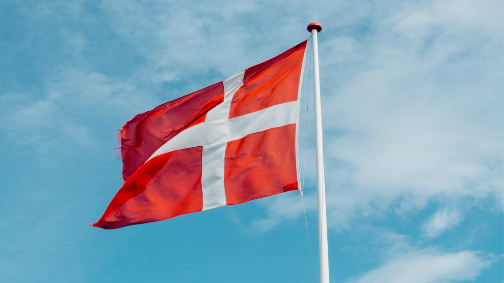

Dinamarca
Informações gerais
O desempenho econômico essencial de um país pode ser visto em seu produto interno bruto. s dados de Pib Per Capita da Dinamarca foram registrados em 67.826,709 USD em 2021. Este é um registro de um aumento com relação aos números anteriores de 61.087,841 USD em 2020.
A Dinamarca possui uma economia aberta, sendo o comércio com o mundo de uma extrema importância. Importações e exportações de bens e serviços representam respectivamente 33% e 36% do PIB do país (2000).
Idioma falado é o dinamarquês (dansk), uma língua germânica do norte falada por cerca de seis milhões de pessoas, principalmente na Dinamarca e na região de Schleswig-Holstein, no norte da Alemanha.
História
A Dinamarca é um país cuja história está ligada aos países escandinavos e o norte da Europa, é um país que tem a muralha mais antiga que pode ser encontrada no continente, uma muralha que data do Século XII. Este país foi unificado pela primeira vez por Harald Blatand no Século X, no final da mesmo e durante o século posterior, o Século XI, foi atacada uma boa parte do continente.
Os Vikings dinamarqueses passaram a ter controlo sobre os países como a Inglaterra, como a França e parte da Alemanha. Também penetrou no Mediterrâneo, foi um povo que temia a violência com qual foram atacados, causando terror onde passavam.Toda esta história fez com que a Dinamarca seja um impressionante destino para os amantes da cultura nórdica, castelos, palácios podem ser visitados pelos amantes da arquitectura e monumentos, hoje a Dinamarca é um país que faz parte da União Europeia.
Política
O sistema político dinamarquês é uma estrutura multipartidária em que diversos partidos são representados no Parlamento. Os governos dinamarqueses são frequentemente administrações de minorias, governando com o auxílio de um ou mais partidos que os apoiam.
Isso significa dizer que a política dinamarquesa é caracterizada pelo compromisso interpartidário. Os condados e municípios dinamarqueses têm um alto grau de autonomia regional, tendo suas próprias eleições e administrações regionais.
Cultura
A cultura dinamarquesa é reconhecida como uma cultura cosmopolita e bastante aberta e receptiva. A população do país, considerando todos os seus territórios, é composta predominantemente por pessoas originárias dele. Também é conhecida mundialmente pelo foco na sustentabilidade, pela nova culinária nórdica, pelos móveis de design clássicos e por ser o país mais feliz do mundo.

Museu de arte
Pulse
Unknown
Smorrebrod
Pontos turísticos
Pouco se sabe sobre os pontos turísticos da Dinamarca. Talvez porque o turismo no país escandinavo ainda seja muito subestimado e algumas pessoas só ouvem falar sobre a cidade de Copenhague. Pois bem, a verdade é que, de fato, muitos lugares famosos do país estão localizados na capital.

Nyhavn
Copenhague

Palácio Christianborg
Copenhague

Vikingeskibsmuseet
Roskilde